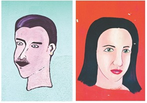

Gráfica Popular Dominicana

Maurice Sanchez
La pasión por la cultura popular del artista Maurice Sánchez, hizo que se dedicara a retratar la creatividad y cotidianidad de los dominicanos. Junto a Ediciones De a Poco lanzó Flow Tropical, un cuaderno de postales coloridas compuesto por una muestra de las fotografías que Sánchez, durante 20 años, ha tomado en las paredes de comercios por toda la geografía dominicana.
Para ampliar más sobre este proyecto Sánchez y el coordinador de Ediciones De a Poco, David Puig, responden a algunas preguntas realizadas por Ventana.
Flow Tropical
¿En qué consiste el proyecto Flow Tropical?
Flow Tropical es un libro visual con el tema de la gráfica popular dominicana. Una colección de fotografías documentales que celebran esta expresión popular y a sus casi siempre anónimos creadores. El libro estará listo a finales de este año y para promocionarlo acabamos de sacar un cuaderno de diez postales.
¿Cómo le surge la idea de retratar lo cotidiano y estas imágenes del arte popular dominicano?
Siempre he sido un apasionado de la cultura popular. Me interesé casi al mismo tiempo por la fotografía y el diseño gráfico en un momento en que se discutía mucho la influencia de lo vernáculo en el diseño profesional de Estados Unidos y esto me motivó a hacer el mismo ejercicio con mi entorno. En un principio hacía las fotos solo para usarlas como referencia en proyectos de diseño. Al poco tiempo comencé a interesarme cada vez más por los murales y a querer saber más sobre sus autores y sus historias.
¿Por qué elegir, específicamente, las pinturas populares dominicanas?
Porque son un libro en proceso sobre nosotros mismos, son la versión más cercana que tenemos de un auténtico arte de la calle o arte público. Tenemos mucho que aprender de su espontaneidad, originalidad y sabor.
¿Luego de Flow Tropical, que otros proyectos tiene en mente?
La verdad muchos. Tengo algunas historias que me gustaría contar y muchas otras por conocer. Quizás algún día pueda hacer un proyecto de cine documental. Puedes ver algunos de mis trabajos en mi blog:
www.theoldsystem.tumblr.com
David Puig
¿Qué le motivó a elegir este tipo de libros, para presentarlo en el mercado dominicano?
Hace un par de años recibí la visita de una amiga de Japón. Después de recorrer el país, fuimos a la librería Cuesta en Santo Domingo. Kana, como la mayoría de los extranjeros que nos visitan, no habla español y buscaba un libro para llevarse de recuerdo. Después de muchas vueltas, dimos en un lugar remoto de la librería, con el bello libro de Polibio Díaz sobre los interiores de las casas dominicanas. Apenas lo ojeó, Kana dijo, con una sonrisa en la cara, que se lo llevaba. ¿Qué quiero decir con esta anécdota? Que existe un mercado para los libros visuales bien hechos y originales sobre la República Dominicana. Que además de los lectores dominicanos, nos visitan miles de turistas cada año y no todos quieren comprar artesanía. Los libros visuales no tienen barrera de idioma. Se pueden vender tanto en el país como en el exterior.
Nuestros cuatro primeros libros fueron de narrativa y poesía, pero de alguna manera la intención de hacer libros visuales estaba ahí desde el principio. De hecho, hemos tenido desde nuestros inicios en el 2011 una relación muy estrecha con el mundo del arte. Trabajamos siempre con diseñadores creativos y las portadas de esas cuatro publicaciones son obras de excelentes artistas contemporáneos: Raúl Recio, Quisqueya Henríquez, Jaime Guerra y Laura Castro.
Editar libros visuales ha sido pues un paso muy natural. Ediciones De a Poco tiene como objetivo publicar libros sobre la República Dominicana y el Caribe actual. Las obras de dibujos o de fotografías nos brindan otras perspectivas, otras puertas de acceso, a esa realidad. Trabajar con libros visuales ha sido también un proceso placentero que nos ha permitido intentar cosas nuevas con la forma y el diseño.